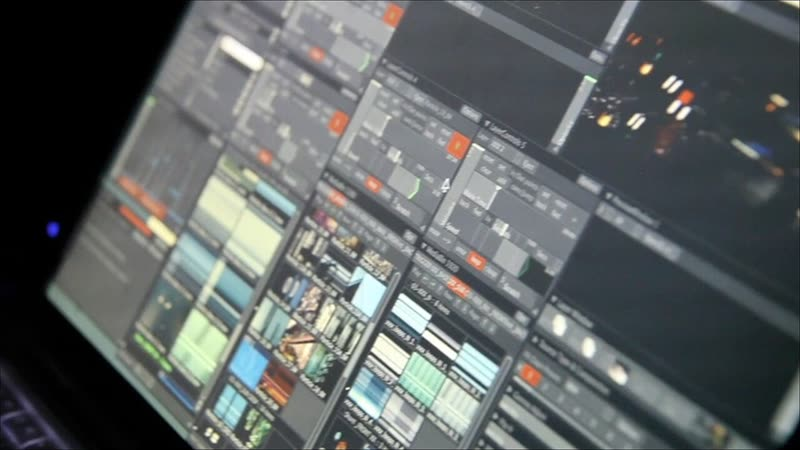
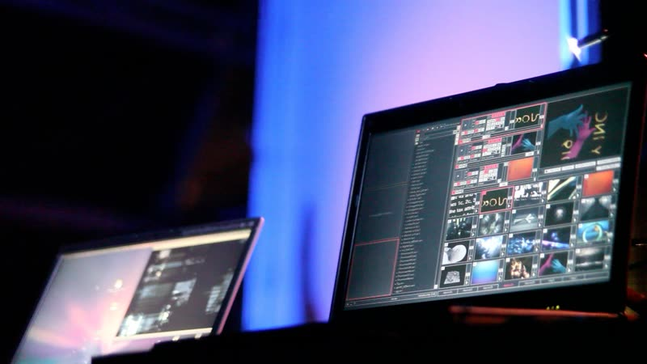

3DCG のソフト
いろいろなソフトがある ― この授業は Blender
画像：Maya・3ds Max・AutoCAD は Autodesk 公式動画より（Autodesk screen shots reprinted courtesy of Autodesk, Inc.）／ Fusion 360・ZBrushCoreMini・Cinema 4D・Tinkercad は Wikimedia Commons（CC BY-SA 4.0）／ Houdini（CC0）・Rhinoceros（CC BY 4.0）も Wikimedia Commons ／ Blender は授業の画面
Blender と音楽
VJ・ライブ映像でも、Blender で作った素材が使われている
Kaizen「Audio Visualizer using Geometry Nodes in Blender」― 音に反応して動く映像を Blender で作る
しくみ
Blender で数秒のループ映像を書き出す → VJ ソフト（Resolume・VDMX・TouchDesigner ＝ 次のページ）で、音に合わせて切り替え・重ねる
事例
- Ducky 3D（Nathan Duck）：Blender のループ映像でコンサート用ビジュアルを制作
- Blender 製の VJ ループ素材（Resolume 用）が販売・無料配布されている
- Blender Conference 2025：夜は会場がクラブになり VJ／DJ セット
音に反応させる
音の波形をキーフレームに焼き込む（サウンドをベイク）→ 大きさや Geometry Nodes を音で動かす。リアルタイムは TouchDesigner に素材を渡す
検索ワード：Blender VJ loop ／ Blender audio reactive ／ Blender TouchDesigner ／ 日本語なら「Blender Infinite Loop VJ」
Blender と音楽
VJ ソフト ― Blender の映像を、音に合わせて流す
TouchDesigner ↗
ノードをつないで、映像・音・センサーをリアルタイムに処理。インスタレーションやライブ演出に
Mac／Windows ・ 無料版あり（非商用・1280×1280 まで）

VDMX ↗
画面を自由にレイアウトして、ループ映像の切り替えやエフェクトを操作
Mac 専用 ・ 体験版あり（保存以外はすべて使える）

Resolume ↗
クリップを並べて、押すだけで切り替え。Avenue＝VJ、Arena＝プロジェクションマッピングも
Mac／Windows ・ 体験版あり（ロゴとロボット音声が入る）
流れ：Blender で数秒のループ映像を書き出す → VJ ソフトに読み込む → 音や MIDI コントローラーで切り替える
写真：Wikimedia Commons（Nonintia、CC BY-SA 3.0）／ TouchDesigner は説明用の図
今日の流れ
Blender で、AR に置く「モノ」を作る
第6回
Blender入門インストール・視点・G／R／S第8回
モディファイア・色左右対称・マテリアル。Blender はここまで
最小ライン立方体を動かして保存
→
今日のゴール ＝ 課題プリミティブで動物を 1 体作るスクショを提出
→
できた人から色をつける
今日の画面は Blender 5.2 LTS・日本語表示
動画で見る
Blender の使い方・簡単なモデリング
M design「【これから始める】【blender初心者】Blenderの使い方・簡単なモデリングの解説」（Blender 2.92 の画面。見た目は少し違うが操作は同じ）
③ 動画で見る
丸いすの作り方（ツールバーとギズモで・100 秒）
白いキー＝押すキー、青＝マウス・トラックパッド操作、（ ）の中はショートカット。① 削除 → ② 円柱 → ③④ 座面 → ⑤⑥ 脚 → ⑦ ピボットポイント → ⑧⑨ 複製して回す → ⑩ 保存
④ 動画で見る
雪だるまの作り方
青＝マウス・トラックパッド操作、白いキー＝押すキー、（ ）の中はショートカット。① 削除 → ② UV球 → ③ 複製して頭 → ④ 円錐の鼻 → ⑤ 帽子 → ⑥ つば → ⑦ スムーズシェード → ⑧ 目・ボタン → ⑨ 保存
今日のまとめ
第6回のまとめ
- 視点：2本指で回す・ギズモ・1／3／7・Home
- 足す：Shift ＋ A → メッシュ、消す：X
- 動かす：G・R・S → 軸 X／Y／Z → 数値 → ⏎。戻すは Cmd ＋ Z
- 保存：Cmd ＋ S（.blend、名前は英数字）
- Tab で オブジェクトモード ⇄ 編集モード（点・線・面をいじる）→ 次回
次回：第7回 編集モード（Tab）― 点・線・面を押し出し・ループカットで作り込む。今日の .blend は消さない。
付録
よく使うショートカット一覧
視点
| 2本指ドラッグ | 回す（Option ＋ ドラッグでも） |
| Shift ＋ 2本指 | ずらす |
| ピンチ | 寄る・引く |
| 1 ／ 3 ／ 7 | 前 ／ 右 ／ 上 から見る |
| Cmd ＋ 1 ／ 3 ／ 7 | 後ろ ／ 左 ／ 下 から見る |
| 5 | 透視投影 ⇄ 平行投影 |
| Home | 全部が見える位置に戻す |
選ぶ・足す・消す
| クリック ／ Shift ＋ クリック | 選ぶ ／ 追加で選ぶ |
| A ／ Option ＋ A | 全部選ぶ ／ 全部解除 |
| Shift ＋ A | 追加メニュー |
| Shift ＋ D | 複製（右クリックでその場に置く） |
| X ／ Delete | 削除（X は確認あり） |
| H ／ Option ＋ H | 隠す ／ 隠したものを全部出す |
| F2 | 名前を変える（英数字で） |
動かす・カーソル・保存
| G ／ R ／ S | 移動 ／ 回転 ／ 大きさ → X・Y・Z で軸 → 数字 → ⏎ |
| Esc ／ 右クリック | 途中でやめる |
| Option ＋ G ／ R ／ S | 位置 ／ 回転 ／ 大きさ をリセット |
| Shift ＋ 右クリック ／ Shift ＋ C | 3D カーソルを置く ／ 真ん中に戻す |
| N ／ T | サイドバー（数値）／ ツールバー |
| Cmd ＋ Z ／ Shift ＋ Cmd ＋ Z | 戻す ／ やり直す |
| Cmd ＋ S | 保存（名前は英数字で） |
| Tab | 編集モード ⇄ オブジェクトモード（第7回） |
Windows は Cmd → Ctrl、Option → Alt、2本指 → マウスのホイール。この一覧は授業ページの配布資料に PDF（A4 1枚）がある